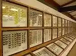
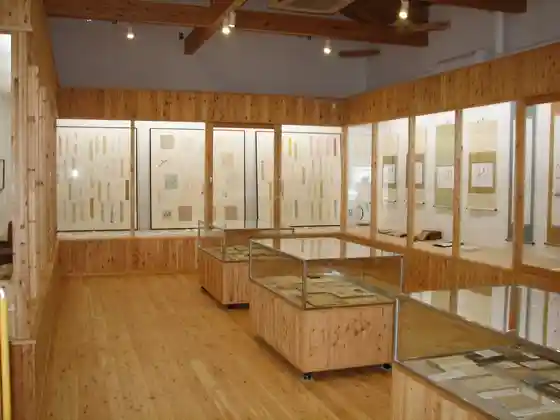
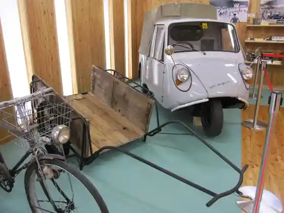

Aoki Ei Yokote Campground
Aoki, Nagano · 0268-49-0707 · Official / source link
Shinshu Konchu Museum
Aoki, Nagano · 0268-37-3988 · Official / source link

Aoki Rekishi Bunka Museum
Aoki, Nagano · 0268-49-0303 · Official / source link

Aoki Folk Museum
Aoki, Nagano · 0268-49-0303 · Official / source link

Aoki Kyodo Art Museum
Aoki, Nagano · 0268-49-3838 · Official / source link
Furusato Koen Aoki
Aoki, Nagano · 0268-49-0111 · Official / source link
Aoki Tami Puru
Aoki, Nagano · 0268-49-2224 · Official / source link
Aoki Marettogorufu Ba
Aoki, Nagano · 0268-49-2224 · Official / source link
Aoki Sogo Gym Judo Ba
Aoki, Nagano · 0268-49-2224 · Official / source link
Aoki Sogo Gym Kendo Ba
Aoki, Nagano · 0268-49-2224 · Official / source link